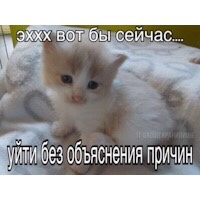
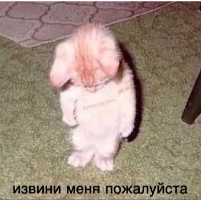
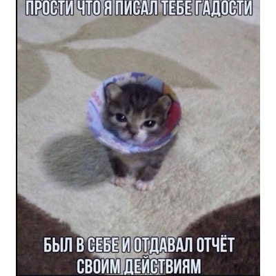
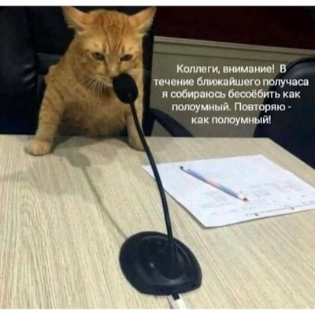

Я совсем недавно начала знакомиться с виртуальной жизнью. Данная страница будет содержать пару милых котиков со смешными надписями, на разные ситуации.
 Согласитесь, часто бывают такие ситуации, что хочешь выразить какие то эмоции,но не знаешь как? В такие моменты на помощь приходят мемы с котиками! Достаточно сохранить себе в арсенал несколько подопечных и взять на вооружение в любом онлайн диалоге!
"я конешно недоволен но это еще цветочьки"
9\10: +10 за серого котика и славную мордочку, -1 за текст без запятой.
Данный котик сообщает, что сильно злиться, но не прямым текстом, что меня и привлекло.

"извини меня пожалуйста"
8\10: +9 за котенка(+1 за рыжего котенка), -2 за текст без запятой и водяной знак на животике.
Картинка на самом деле мне не сильно импонирует, но в любом случае это котеночек, поэтому ее нельзя исключать из этого списка.

"я, конечно, могу с тобой согласиться, но тогда мы оба будем неправы, понимаешь?
9\10: +6 за котеночка(-1 за странную мордашку... либо ему страшно, либо он пассивно агрессирует, не понятно), +2 за однотонный хороший фон, +2 за текст с пунктуацией.
Признаюсь, это мой любимый котеночек за счет этой подписи. Она прекрасно подходит к его мордашке, ведь я склоняюсь думать, что он не боится, а злится.

"прости что писал тебе гадости; был в себе и отдавал отчёт своим дейстивям"

"Коллеги, внимение!"
10\10!Поздравляю! Мы дошли до конца этой страницы. Теперь у вас есть целых 6 картиночек с котятами, которые можно показать или отправить своему собеседнику, что бы не расписывать все свои мысли. Но я не советую злоупотреблять, тк вы берете всю ответственность на себя, а так же и последствия. Спасибо.